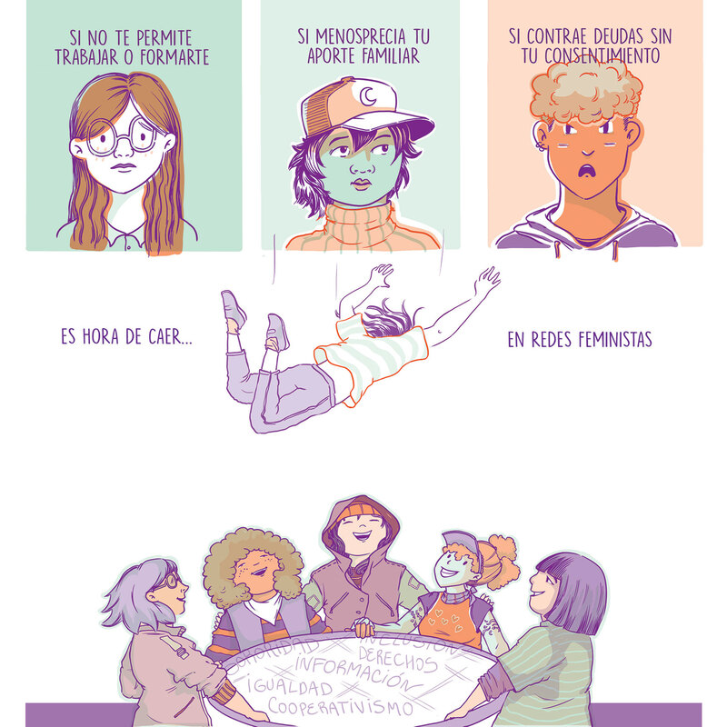

Femicidio que encendió el primer Ni Una Menos, 9 años atrás
En 2020, al cumplirse cinco años del crimen de Chiara Páez, su papá, Fabio Páez, habló con Télam sobre el punto de inflexión que significó el femicidio de su hija para la sociedad argentina. "Creo que Chiara fue la gota que rebalsó el vaso. La violencia no empezó el 10 de mayo del 2015, cuando fue el femicidio de Chiara.
"Tenemos una menos en nuestra familia", dijo el papá de Chiara Páez
Chiara Páez desapareció la madrugada del 10 de mayo de 2015 en Rufino, una localidad del sur de la provincia de Santa Fe, luego de salir con un grupo de amigas y decirles que iba a encontrarse con su novio Manuel Mansilla, que en ese momento tenía 17 años.
Aquel domingo, la familia denunció que la adolescente no había regresado a su casa y la Policía rastrilló el pueblo junto a los vecinos para encontrarla. El cuerpo apareció horas después enterrado en el patio de la casa familiar de Mansilla quien, según la Justicia, la mató a golpes.
El trabajo de Muriel Frega realiza un aporte fundamental de las redes comunitarias feministas en los territorios que s e convierten en el abrazo necesario frente a la dependencia y hostigamiento que aísla y desampara a las mujeres, lesbianas, travestis, trans y personas no binarias.

La furia de la madre de Chiara Páez: “Esta Justicia siempre se pone del lado de los delincuentes”
La causa judicial por el femicidio de Chiara Páez
En julio de 2016 el juez de Menores Adrián Godoy encontró a Manuel Mansilla "penalmente responsable" del femicidio, pero la pena se estableció un año después, en septiembre de 2017, cuando el condenado alcanzó la mayoría de edad. El juez Javier Prado le dictó una condena de 21 años y 6 meses de prisión, confirmada el 2 de marzo de 2018 por la Cámara de Apelaciones de Rosario.
A 9 años del NI UNA MENOS hubo al menos 2544 FEMICIDIOS en la Argentina